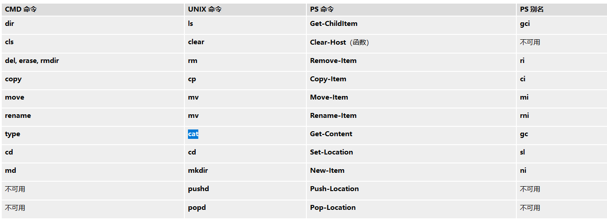
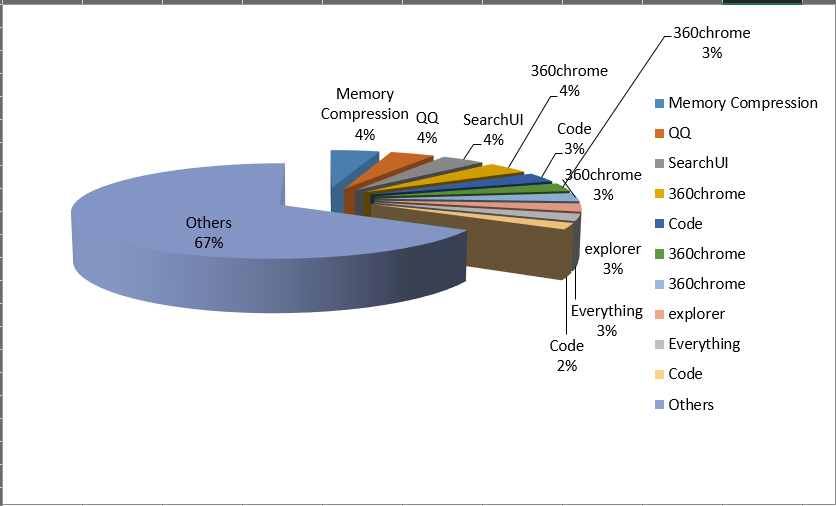

powershell快速入门介绍
文章目录
介绍powershell的特性、IDE、常用语法。
简介
Windows Powershell 是运行在windows机器上实现系统和应用程序管理自动化的命令行脚本环境。可以把它看成是命令行提示符cmd.exe的扩充，不对，应当是颠覆。 powershell需要.NET环境的支持，同时支持.NET对象。微软之所以将Powershell 定位为Power，并不是夸大其词，因为它完全支持对象。其可读性，易用性，可以位居当前所有shell之首。
PowerShell Core是一个跨平台（Windows，Linux和macOS）自动化和配置工具/框架，可与您现有的工具配合使用，并针对结构化数据（例如JSON，CSV，XML等），REST API进行了优化和对象模型。它包括命令行shell，关联的脚本语言和用于处理cmdlet的框架。
IDE
vscode
powershell是vscode的一个插件，搜索安装即可。支持代码智能提示、缩进、代码调试和运行等功能。
Windows PowerShell ISE
Windows PowerShell 集成脚本环境 (ISE) 是 Windows PowerShell 的主机应用程序。在 Windows PowerShell ISE 中，可以在单一 Windows 图形用户界面中运行命令以及编写、测试和调试脚本，该用户界面具有多行编辑、Tab 补齐、语法着色、选择性执行、上下文相关帮助等功能，而且还支持从右到左书写语言。此主机应用程序最多还可以包括八个会话。 可以自定义 Windows PowerShell ISE 的外观。Windows PowerShell ISE 还有自己的 Windows PowerShell 配置文件，您可以在其中存储在 Windows PowerShell ISE 中使用的函数、别名、变量和命令。
PowerShell Studio
PowerShell Studio是适用于Windows PowerShell的最佳编辑器和工具之一。什么是PowerShell？也许大家用命令CMD，你知道命令提示符窗口，这意味着从Windows NT的早期使用相同的语法DOS的人站立于Windows图形环境，使用它可以通过同样的事情被限制了我们通过Windows窗口以图形方式执行。微软后来得出结论，Windows环境值得一个更强大的终端，这导致了PowerShell演示文稿。
使用介绍
命令介绍
Powershell 的命令基本上都是动词-名词形式的，所见即所得，方便记忆。
Powershell 和Linux Shell 还有一个不同点在于Powershell 是基于 .NET平台的，它的命令叫做cmdlet。cmdlet功能比普通的Linux 命令更强，因为cmdlet接受的参数不是字符串，而是 .NET 对象，这使得Powershell 的功能更加强大和灵活。
获取命令
如果想要获取当前会话中所有可用的内置命令，可以使用命令Get-Command，它的别名是gcm。
获取别名
Windows PowerShell 具有几个转换别名，允许 UNIX 和 Cmd 用户在 Windows PowerShell 中使用熟悉的命令名称。下表列出了最常用的别名以及别名背后的 Windows PowerShell 命令和标准的 Windows PowerShell 别名（如果存在）。
使用 Get-Alias cmdlet 可以从 Windows PowerShell 中查找任何别名所指向的 Windows PowerShell 命令。例如，键入 get-alias cls。

获取帮助
如果要获取一个命令的帮助，可以使用Get-Help。如果使用上面介绍的列出别名的命令的话，会发现这个命令的别名是man，恰好就是Linux 系统下的获取帮助的命令。当然它们的功能也很相似。
##应用实例
从网上找了个例子来看看Powershell的实际作用。我们可以从中了解到Powershell的强大特性，用它帮助我们方便地管理Windows操作系统。
贴一个网络上的例子。运行一下会直接打开Excel并填充数据，然后画出占用内存前十的程序的饼状图。
Office互操作
1 2 3 4 5 6 7 8 9 10 11 12 13 14 15 16 17 18 19 |
# create new excel instance
$objExcel = New-Object -comobject Excel.Application
$objExcel.Visible = $True
$objWorkbook = $objExcel.Workbooks.Add()
$objWorksheet = $objWorkbook.Worksheets.Item(1)
# write information to the excel file
$i = 0
$first10 = (ps | sort ws -Descending | select -first 10)
$first10 | foreach -Process {$i++; $objWorksheet.Cells.Item($i,1) = $_.name; $objWorksheet.Cells.Item($i,2) = $_.ws}
$otherMem = (ps | measure ws -s).Sum - ($first10 | measure ws -s).Sum
$objWorksheet.Cells.Item(11,1) = "Others"; $objWorksheet.Cells.Item(11,2) = $otherMem
# draw the pie chart
$objCharts = $objWorksheet.ChartObjects()
$objChart = $objCharts.Add(0, 0, 500, 300)
$objChart.Chart.SetSourceData($objWorksheet.range("A1:B11"), 2)
$objChart.Chart.ChartType = 70
$objChart.Chart.ApplyDataLabels(5) |
结果如下图 
界面美化
可使用oh-my-posh和cmder
常用命令语法介绍
参考1 https://blog.csdn.net/mr_pang/article/details/50571866
参考2 https://www.cnblogs.com/chsword/archive/2011/10/17/PowerShell_3.html
1 2 3 4 5 6 7 8 9 10 11 12 13 14 15 16 17 18 19 20 21 22 23 24 25 26 27 28 29 30 31 32 33 34 35 36 37 38 39 40 41 42 43 44 45 46 47 48 49 50 51 52 53 54 55 56 57 58 59 60 61 62 63 64 65 66 67 68 69 70 71 72 73 74 75 76 77 78 79 80 81 82 83 84 85 86 87 88 89 90 91 |
注释
•#语句
•<# 语句 #>
变量
•命名法则 $ 做为前缀
•使用字母、数字、下划线均可
•查看所有变量 Get-ChildItem variable:或Get-Varialbe
•获取作用域变量Get-Variable –Scope [Local|Global]
•实例化对象 $dt=New-Object DateTime
数组
•定义$arr=1,2,3,4
•$arr=1..4
•取值 $arr[1,3]、 $arr[1,3+2]、 $arr[1..3+2]
•赋值 $a,$b=1,2、 $b,$a=$a,$b
•运算符 +操作符进行数组合并
•比较运算符可筛选数组内容
Hashtable
•PowerShell中自然集成Hashtable
•定义方式 @{a=1;b=“t”}
•合并操作符@{a=1}+@{b=2}
•取值 $ht=@{a=1} 则使用$ht[“a”] $ht.a均可
•其它操作方法与CRL对象一致
字符串/其它对象
•多行字符串 @”....”@
•字符转义`符号如”`n”
•字符串复制 “a”*2
•将字符串转为XML对象[xml]"<a>12</a>"
过程控制
•if(){}elseif{}else{}
•switch(){value1{…;break}value2{….;break}}
•foreach($xxx in $yyy){}
•for($i=0;$i –le 100;$i++){}
•while(){}
•do{}while()
•do{}until()
方法
function methodName {
param ($size)#参数
#执行的语句
}
或
function methodName ($p){
#执行的语句
}
CLR/DLR对象
•Static成员访问 [DateTime]::Now
•实例化 $dt=new-object DateTime(1999,9,9);
•实例成员的访问 $dt.AddDays(100)
•泛型类型的使用 $l=new-object System.Collections.Generic.List[int]
•获取对象的所有成员 Get-Member –InputObject $l |
powershell的强大在不断学习和使用过程中会慢慢体会到。不断学习！不断进步！
文章作者 GSir
上次更新 2018-12-03